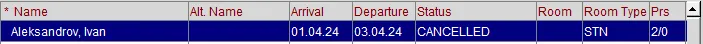

Не забываем, что нужно взять оплату за предыдущую ночь. Предыдущую ночь необходимо начислить через Post Rate Code.
Негарантированные бронирования (NG) отменяются перед ночным аудитом. После отмены, в Arrivals такой брони не будет. Ее можно найти через Reservations → Update Reservation. Статус у отмененной брони изменится на CANCELLED.

Гарантированные бронирования (CC, DB, DR) не отменяются и, после запуска ночного аудита, статус таких бронирований изменится на NO SHOW. В Arrivals такой брони уже не будет. Найти ее можно также через Reservations → Update Reservation.
Чтобы восстановить любое из этих бронирований, в Reservations → Update Reservation, в меню справа, необходимо нажать на кнопку Reinstate, откроется окно брони, при этом дата заезда автоматически изменится на +1 и после этого нажать на кнопку Save, бронирование появится в Front Desk → Arrivals.
Если бронь была изначально на 1 ночь, то после Reinstate меняем количество ночей на 0, предварительно сверив стоимость ночи. После заселения брони с 0 ночами, пакет проживания сразу появится в Billing на номере гостя.
Для того чтобы быстро найти все No Show брони:
После ночного аудита, в Reservations → Update Reservation, ставим Arrivals From: -1 (минус один), открываем Advanced, выбираем в разделе Search Type опцию No shows → Search.